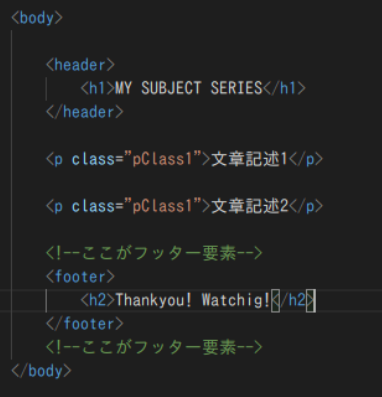
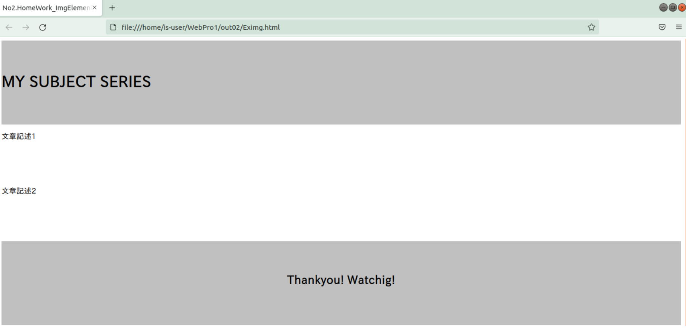

ヘッダー要素コード例:header
<コード例>

<実行結果>

ページの最上部に題名を記述できました。
最終更新日:2021 11/8
SERIES No.02-3
contents
はじめに
ここではヘッダーとフッター要素要素についての説明を行います。
参考元ではヘッダー要素とフッター要素は分かれて紹介されていましたが、ここでは一つにまとめて紹介してみました。
要素説明
ヘッダーとフッター要素は、それぞれWebページの上部と下部に専用のコンテンツを作成するときに用いられます。
主にWebページの題名や更新日などのページの基本情報を書き込むところです。
今回は特に属性値などは存在しません。
HTMLコード例
実際にヘッダーとフッター要素のHTMLコード例、実行結果を見ていきましょう。
ヘッダー、フッター要素どちらともbody要素の中に記述します。
ヘッダーフッターの灰色のデザインはCSSで記述していますが今回はHTMLのみの記載にします。
ヘッダー要素コード例:header
<コード例>
<実行結果>
ページの最上部に題名を記述できました。
フッター要素コード例:footer
<コード例>
<実行結果>
ページの最下部も作成できました。
ヘッダー、フッターがあると一気にWebページが締まって見えますね。
おわりに
ヘッダーとフッターはWebページに入った時に一番目に入りやすい所なので、どの様に作成するのかよく考えて作りたいですね。
様々な企業や個人Webページのヘッダーフッターをよく見るのも楽しいかもしれませんね。
-ソース一覧-
ヘッダー&フッター要素参考サイト